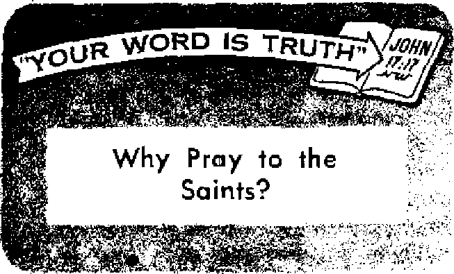

Jesus Io Id ua to be cautious as serpents and yet innocent as doves. This counsel Is especially applicable when Christians have to deal with Caesar.
I
Why pay taxes?
How a man’s curiosity led to events that strained relations between two nations
Is death on your dinner plate?
The Bible has the answer
JULY 22, 1957 semimonthly
itlfi MISSION OF THIS JOURNAL
News sources that are able io keep you awake to the vital Issues of our times must be unfettered by censorship and selfish interests. “Awake!” has no fetters. It recognizes facts, faces facts, Is free to publish facts. It is not bound by political ambitions or obligations; it is unhampered by advertisers whose toes must not be trodden on; it is unprejudiced by traditional creeds. This Journal keeps itself free that it may speak freely to you. But it does not abuse its freedom. It maintains integrity to truth.
“Awake I” uses the regular news channels, but is not dependent on them. Its own correspondents are on all continents, in scores of nations. From the four corners of the earth their uncensored, on-fhe-scenes reports come to you through these columns. This journal’s viewpoint is not narrow, but is international. It is read in many nations, in many languages, by persons of all ages. Through its pages many fields of knowledge pass in review—government, commerce, religion, history, geography, science, social conditions, natural wonders—why, its coverage is as broad as the earth and as high as the heavens.
“Awoke I” pledges itself to righteous principles, to exposing hidden foes and subtle dangers, to championing freedom'-for all, to comforting mourners and strengthening those disheartened by the failures of a delinquent wcft-ld, reflecting sure hope for the establishment of a righteous New World.
Get acquainted with “Awakel” Keep awake by reading “Awokel”
PUBUBHSD SEMIMONTHLY BY
WATCHTOWER BIBLE AND TRACT SOCIETY OF NEW YORK, INC-
117 Adams Street, Brooklyn 1, New York, U, S. A. N. H< Knohb, President Grant Sutter, Secretory
Printing this issue: 2,350,000 Fivw cents a copy
Other ltn|Mpei In which “Awiki!” is published: Sinrfnonthly—Afrikaans, Finnish, FrcncEi, (krman, Greek, ifoUmdlih, Italian, Mott^Iad, Spanish, SwtdlelL
Monthly—Danlali, Jipauei^j PortufiE«e> Ukrttnlan.
Yuriy subscription ratci
OK* for mUrnoulMj edition!
Antries. U.S,, 111 Adona St,, Brooklyn 1, N.Y. Si A Mtn I It, 11 Beresford BJ-, Strathfleld, K.8.W, 8/-Co it ado, 150 Bridgeland Ave., Toronto 10, Ont. (1 England, 34 Craven Terrace, Jxnidan W, 2 ?/>
New Zealand, G.P.0. Boi 30. WelllngUm, C. 1 »/-Sortb Africa, Private Bag, ElADdsfonteln, Tri, T/-
■Jonftfy ndRIcne east half the abew rttn.
flemiHaneef should be sent to office In ycrur com)' try in compliance with regulations to guarantee safe delivery pr money. RcmkuDcee are accepted at Brooklyn from couq Iries when no office is located, by international money order only. Subscription rata In different countries are here sUted Ln local currency. Hotta of uplritlMi (with renewal blank) Ie sent at least two Lsues before jnibecrlptlon empires. Change tf addrsi when sent to our office m&y be expected effective within one month. Bend your old as well as new address.
Entered as second-class matter at Brooklyn, N.Y.
Printed In U.S.A.
CONTENTS
Precious Things in Smail Packages
Taipei Riots Against Military Justice
Imagination—the Charm of Childhood
A Judge Who Jailed Jehovah’s Witnesses
“Your Word Is Truth”
Jehovah's Witnesses Preach in Ail
OFTEN you hear people say: “I’m too old to change.” Or, “You can’t teach an old dog new tricks.’’ Even younger people often think: “Well, I was raised this way, I don’t suppose I can change my outlook now.”
It is true that what is in your mind affects your outlook and what you do, but there is never any need to feel that you are too set in your ways to replace those things with better and more accurate information, if that is needed.
The mind might be likened to a vessel. Whether it is clean and honorable, or whether it is to be despised, depends upon what is put into it. We each have control over what we put into our minds, but once those ideas are put there they can have control over us. Thus we must carefully watch what we put into our mind, either through study, meditation or daily conversation. Good things will help you to go in the right way, but bad things can lead you astray.
But how can you change your mind, putting undesirable things out of it and replacing them with better ones? You can do this in the same way that you would wash out a vessel, by flushing the old things out with pure, clean water. The water you use for your mind is the things of truth, the right things that you want to have in your mind. Study, meditate upon and talk about these things. The mind is a large vessel, and it takes much right information to crowd out what is wrong; but occupy your mind with the right things and you will be amazed at how other thoughts will fade through disuse.
The apostle showed that you really can do this, transforming your mind from the world's outlook to the one outlined by God. He said: “Quit being fashioned after this system of things, but be transformed by making your mind over, that you may prove to yourselves the good and acceptable and complete will of God.”—Romans 12:2, New World Trans.
A practical example of people who have changed their minds is Jehovah’s witnesses. They are a people who have abandoned the world’s course and accepted God’s, They put God’s worship first, look forward to his kingdom and spend their time teaching others the good things of his Word. Certainly that is a change from the world’s course today I
By following their course you will see the old world’s thoughts fade. You can see them replaced by the good ones outlined in God’s Word. Thus you will have begun to remold your personality from the world’s way to God’s way. You really can do this. Paul said: “You should put away the old personality which conforms to your former course of conduct and which is being corrupted according to his de-, ceptive desires; and should put on the new personality which was created according to* God’s will in true righteousness and loving-kindness.”—Ephesians 4:22, 24, New Wprl.d Trans.
The apostle further showed that this change is possible when he said that neither fornicators, nor idolaters, nor adulterers, nor thieves, nor greedy persons, nor drunkards would inherit God’s kingdom, then added: “And yet that is what some of you were. But you have been washed clean, but you have been sanctified, but you have been declared righteous in the name of our Lord Jesus Christ and with the spirit of our God.”—1 Corinthians 6: 11, New World Trans.
Opening your mind to God’s Word, changing your mind to conform to his instructions and replacing the personality that marks today’s world with the one Outlined by God and Christ—these things will lead you in the right way. They will give you a whole new outlook on life, and you will develop an entirely new way of living as you reject the conflicting thoughts of men and accept the harmonious ones provided by God.
What value will this change of mind have for you? It will lead you in the way of God’s blessings and to a happy, everlasting life. Surely no one is too old or too set in his ways to enjoy such a bright outlook as that!
< Think of owning a pint-sized television camera! The Radio Corporation of America has made one just that size. This one is small enough to be carried in a pocket and can be used for military, airborne, mobile and field closed-circuit TV applications,
< Radio transmitting and receiving sets are getting smaller and smaller. The AVO Manufacturing Company made a set that is about the size of a small cigar box, weighs eight pounds and has an operational range of thirty miles. Imagine, it even includes its own power supply! The set operates from a rechargeable battery, which provides power for 250 hours of continuous operation on one charge. The new-type walkie-talkie uses a Frenchtype telephone to house the speaker and receiver.
Atomic power plants are also shrinking in size. The smallest one in the world is no bigger than a cough drop. This power plant is an atomic-powered battery capable of producing usable electricity for at least five years. The power cell eventually will be used in miniature radios, hearing aids and even watches.
•j; Are you disgusted with blatant, seductive advertising? Then you will appreciate the words of a fellow sufferer: “The trade of advertising is now so near perfection, that it is not easy to propose any improvement. , . . But, as every art ought to be exercised in due subordination to the public good, I cannot but propose it as a moral question to these masters of the public ear, whether they do not sometimes play too wantonly with our passions.” That complaint was written by Dr. Samuel Johnson in 1700. What would he have said today?
Jesus Io Id ua to be cautious as serpents and yet innocent as doves. This counsel Is especially applicable when Christians have to deal with Caesar.
MONG the Jewish sects that opposed Jesus’ ministry were the Pharisees and the Herodians or party followers of Herod. The Pharisees sorely chafed under the Roman yoke, whereas the Herodians were all for it. Though thus radically opposed to each other they found common ground in their opposition to Jesus. Together they had devised a clever trap: “Is it lawful to give tribute to Caesar or not?” If he says Yes, they reasoned, he will lose his influence with the common people, who only a day or two before had hailed Jesus as king of the Jews. And if he says No, why then he will get in trouble with the Roman government. Yes, they were certain they would hang Jesus on the horns of a dilemma.
To cover up their trap they approached Jesus with hypocritical, flattering words: "Teacher, we know you are truthful and teach the way of God in truth, and you do not care for anybody, for you do not look upon men’s outward appearance.” Then, thinking they had put Jesus off guard, they set their trap: “Tell us, therefore, What do you think? Is it lawful to pay tribute to Caesar or not?” Yes, is it?
But Jesus did not walk into their trap. He did not give them an unqualified and heedless Yes or No answer. Not deceived by their flattery, he tore off their mask of hypocrisy, asking them in a tone of righteous indignation: “Why do you put me ti the test, hypocrites?” And then, insteac of answering their question, he turned thi tables on them by calling for a tribute coir and asking them: “Whose image and in scription is'this?” They had to admit i was Caesar’s. So he told them: “Pay back therefore, Caesar’s things to Caesar, bu God’s things to God.” There was the an swer for both the Pharisees and the Hero, dians: for the Pharisee who sought a re. ligious excuse for not giving Caesar’s tilings to Caesar, and for the Herodian who neglected God’s things for the sake of pleasing Caesar. No wonder “they marveled, and leaving him they went off.” —Matthew 22:15-22, Weu; World Trans.
What Are Caesar’s Things?
God’s Word helps us to identify Caesar’s tilings. In view of Jesus’ words they certainly include taxes of all kinds. Does not Caesar provide legal tender, police and fire protection and weather reports? Does he not keep the streets clean and lighted, and furnish us with schools, libraries, museums, hospitals, etc.? For all such services it is but fitting that we pay back, by paying taxes honestly and promptly. Yes, pay “to him who calls for tax, the tax.”—Romans 13:7, New World Trans.
Caesar’s things include compliance with his laws regarding social distinctions. Back there a slave who became a Christian was not to run away because slavery was unjust. And similarly today. Caesar may discriminate unjustly against certain races. Christians are not to take issue with Caesar’s laws on such matters and flout them, but should submit. Caesar may regulate the nature of employment as well as its hours, wages and other factors. It is ^jso within his domain to require the rationing of certain products and to limit production in certain industries or occupations; he may prohibit certain amusements on certain days. His things also include special things from automobile owners-' inspections, licenses, insurance, limiting of Speeds, etc. A Christian is obligated to give all such things to Caesar, and by doing so he will reap “a favorable testimony from people on the outside,” that is, from nonChristians.—1 Timothy 3:7, New World Trans.
Caesar’s things also include some regulating of marriage and divorce. He may properly require blood tests of those wanting to marry; he may stipulate several days of waiting between the issuing of a marriage license and the marriage, that parental consent be obtained under a certain age, that those closely related do not marry. Even where he forbids those of different races to marry, a Christian is not to contest Caesar but to submit.
The giving of due respect to those in authority, such as standing when a judge enters his court, is also included in what is due Caesar. Children who ar§ Jehovah’s witnesses will show due respect to their teachers in school and obey the rules. Authority is to be respected, whether inside or outside of the Christian congregation, as Peter and Paul show: “Honor men of all kinds.” “Render to all their dues, ... to him who calls for fear, such fear; to him who calls for honor, such honor.” Not, however, that the Christian is to show a fear of man that cancels out the fear of Jehovah.—1 Peter 2:17; Romans 13:7, New World Trans.
And while with many the giving of Caesar’s things to him may be merely a matter of ’honesty being the best policy,’ with the Christian it must be a matter of conscience. That is, he will obey Caesar’s laws even in situations where Caesar may not be able to enforce his requirements. For example, the Christian will not claim the full fifteen-percent exemption from his income tax on the basis of charitable donations, simply because Caesar has no way of knowing whether or not he did make such donations, unless he actually has contributed fifteen percent of his income to religious or charitable causes. So Christians are admonished: “There is therefore compelling reason for you to be in subjection, not only on account of that wrath but also on account of your conscience. For that is why you are also paying tribute.”—R.omans 13:5, 6, New World Trans.
“God's Things to God"
While it would be almost impossible to list all the things that Caesar may properly claim, this does not mean that the Christian is to give Caesar all he wants. Not at all! There is one place where the Christian must draw the line, and that is when Caesar asks for God’s things. Yes, the Christian must also pay back “God’s things to God.”
And what are God’s things? Since Jehovah God is the rightful Supreme Sovereign, perfect in justice and love, all-wise and allpowerful, the Creator and Life-giver, he comes first. His demands must receive priority. Caesar may have only such things as God does not call for. At all times the Christian therefore “must obey God as ruler rather than men.”—Acts 5:29, New World Trans.
Jehovah God says: “I Jehovah your God am a God exacting exclusive devotion.” That means “you must love Jehovah your God with your whole heart and with your whole soul and with your whole mind and with your whole strength.” By his dedication a Christian hinds himself to obey these commands; therefore he will be very Sensitive regarding all demands others, and especially Caesar, may make that would interfere with fulfilling his dedication.—Exodus 20:5; Mark 12:30, New World Trans.
The Christian’s position might well be illustrated by that of a married woman who works for an unmarried employer as secretary. At the time she was hired she agreed to serve as a private secretary for so many hours each wdek for so much pay. During the required time she will work conscientiously and will be kind, patient and tactful. But she will not accede to every demand of her employer, especially not if he should prove to be ruthless, greedy or immoral. She will demur if he should demand overtime to the extent that she would be forced to neglect her family; neither will she allow him to take liberties with her so that she can keep her job. For her, the interests of her family come ahead of those of her employer.
And so with Christians. They may be spoken of as devoted exclusively to Jehovah God and his kingdom. They will therefore leave out all sentiment in dealing with Caesar; they will not thrill at the sight of Caesar's banners, nor feel stirred at the sound of his national anthems. Their relations with Caesar will be strictly “business.” They will not slight the interests of God and his kingdom for the sake of Caesar’s interests.
Of course, those not bound to Jehovah God by a vow of dedication may accede to Caesar’s every demand and may give him their love, service and even their lives. But not the dedicated Christian. In line with this very analogy are the words of James censuring compromising Christians: “Adulteresses, do you not know that the friendship with the world is enmity with God? Whoever, therefore, wants to be a friend of the world is constituting himself an enemy of God.”—James 4:4, New World Trans.
So we see that Caesar’s things, which he may properly have, are many. They involve the payment of taxes and obedience to his laws regulating commerce, industry and suchlike. But Caesar may not enter into the domain of worship. God alone is deserving of and can properly require of us exclusive devotion, love, service and even life itself.
<L Preacher-writer and educator Bernard Iddings Bell writes in Crowd Culture of the power of newspapers to indoctrinate the masses: "When Russia was Hitler's ally in World War II, the American people were told by the papers, and believed, that the Russians were little short of fiends. Suddenly Russia changed sides. For reasons not too creditable either to her or to us, she became our ally.
At a dinner in New York at that time, I sat next to a high-up officer of one of the great news-collecting agencies. ‘I suppose,’ I ventured, ‘now that the Muscovites are on our side, the American people will have to be indoctrinated so as to stop thinking of them as devils and begin to regard them as noble fellows.' ‘Of course,’ he replied. 'We know'what our job is in respect to that. We of the press will bring about a complete and almost unanimous volte-face in the belief of the Common Man about the Russians. We shall do it within three weeks.'
He was right about it."
By "Awake!" correspondent in Canada ClpjADLOCK Law Held Invalid by Court.” "Court Strikes a Blow for Liberty.” "Quebec’s Padlock Act, a hateful device of tyranny, disfigured the statutes of Canada far too long. Now it is dead. The Supreme Court, by a majority of eight to one, has expunged this blot on Canadian Liberty.”
The foregoing headlines and comments of Canadian newspapers heralded another powerful civil-liberty decision rendered by the Supreme Court of Canada. The court handed down its decision on March 8, 1957. For the fifth consecutive time Quebec's dictatorial premier, Duplessis, had suffered a resounding defeat in his efforts to destroy the freedom of the people of Quebec and of Canada.
The Padlock Law was, as the Kingston Whig-Standard said, "a disgrace to any free country,” “It gave the Attorney General of Quebec [Duplessisl the power to padloek any premises, from a hovel to a business block, which, in his sole and unquestioned opinion, was used for communistic purposes. Against his word there was no appeal.”—Victoria Daily Times, March 11, 1957.
On paper the law was purported to he a blow against communism. But what was included in the word "Communist"? It meant anyone whom Mr. Duplessis chose to call Communist. And for years Dictator Duplessis has shouted “Communist!” at everyone wbo disagreed with him. In substance, therefore, the law gave him power to silence any voice raised against him. The prominent Ottawa Citizen stated: "With this powerful weapon
, the Attorney General has in recent years harassed the labour unions, religious sects, and minority political parties.”
At times there have been threats to use tills act against property owners desiring to rent buildings to hold Christian assemblies of Jehovah's witnesses, Jehovah’s witnesses have been and are being bitterly persecuted in all lands where communism is in control. No group has made a more determined stand against communism.
“And who,” we may properly ask, "was responsible for the totalitarian legislation?” Let Monsieur Duplessis answer: "The law was passed at the request of the late Rodrique Cardinal Villeneuve, Archbishop of Quebec." That was in 1937. It was also when the Catho-
«* lie dictators Hitler and Mussolini were de> stroying freedom in Europe. In Canada the ; cardinal was seeking to introduce the same < totalitarian thinking,
! s The judgment of Mr. Justice Rand, a firm ’■ believer in freedom of expression and thought.
is eloquent in answer to the argument for sup-/ pression of liberty.
• , Mr. Justice Rand said: "The object of the
legislation here is admittedly to prevent the ? propagation of Communism and Bolshevism, but it could just as properly have been the suppression of any other political, economic ! or social doctrine or theory;.. . . Canadian government is in substance the will of the ' majority expressed directly or indirectly through popular assemblies. This means ultimately government by the free public opinion of an open society, . . . But public opinion, in ' order to meet such a responsibility, demands ‘ the condition of a virtually unobstructed access to and diffusion of ideas. . . . Liberty in ' this is little less vital to man’s mind and spirit ' than breathing is to his physical existence." , The Attorney General of Quebec argued, as he has often done before, that Catholic ■' Quebec is different from other parts of Canada, and the same freedom cannot be allowed . there as in the rest of the country. As stated . hy the Ottawa Citizen: "A slight religious nvertone was evident as counsel contended that Communist propaganda tended to under-< mine religious morals in predominantly Ro: man Catholic Quebec.”
!• The substance of this argument of the At-5 torney General is that the morals of the Cath-•' otic inhabitants of Quebec are weaker than ? the morals in other parts of Canada; hence, ! the same amount of libcrtj- cannot be allowed, s Yet the same Roman Catholic Church claims »• to be the guardian of Quebec morals and also >• a bulwark against communism! The entire \ position is ridiculous and unfair to the people
of Quebec.'
j It was stated by the Ottawa Citizen: "The •! Supreme Court judgment declaring Quebec’s ? Padlock Law unconstitutional and invalid was heartily applauded by editors in all parts
\ of the country. At the same time, there was ? general agreement that such a declaration \ was long overdue.”
\ It had taken twenty long years to have ? the law declared invalid.
AlPEI
TV I
AINST MILITARY JUSTICE
BY "AWAKB1" CORRESPONDENT [N TAIWAN
WITH explosive suddenness rioting broke loose on May 24 in Taipei, capital of the Chinese Nationalist- government on Taiwan. Anti-American demonstrations were staged that shocked and amazed the Western world, as well as the republic of China herself.
An inflamed crowd of angry Chinese citizens, numbering nearly 10,000 persons, played havoc with millions of dollars worth of American property. The buildings of the American Embassy and United States Information Service were completely wrecked. The Taipei city police headquarters sustained heavy damage, while the headquarters buildings of the American Military Assistance Advisory Group (MAAG) and the Taiwan Defense Command were attacked hy rioters. Eleven Americans and a number of Chinese were injured, as well as one Chinese killed.
What caused this outburst? Has not the United States spent hundreds of millions of dollars in economic, military and technical assistance to Nationalist China on Taiwan since 1945? Has this not succeeded in cementing the traditional Sino-American friendship?
It has been stated by high Chinese officials that this does not indicate any expression of anti-Americanism, but only dissatisfaction over the trial of Master Sergeant Robert R. Reynolds and His subsequent acquittal by a U.S. court-martial.
The story that was to have world-wide repercussions and Strain the relationship of two. very close allies began on the evening of March 20. On March 21 Americans and Chinese alike read a short article in the morning papers that said that the
American sergeant had shot to death a Chinese citizen, Liu Tze-jan. Reynolds claimed that he had shot Liu twice in selfdefense, that the latter , had been peeping through the bathroom window at his wife, who was taking a shower, and that when intercepted he attacked Reynolds, resulting in the shooting.
At case,
first little attention was paid to the even though it was the first of its kind since the stationing of Americans here. Reynolds, charged with voluntary manslaughter, would be tried before a twelve-man court-martial instead of a Chinese court. Though the shooting occurred off base, under' existing agreements between the governments concerned military personnel are given diplomatic immunity.
sharp . furor
ft'
On May 20, the date the trial was set to begin, the CItinct Post said in : an editorial: “In contrast to the that has been stirred up in Japan over .the killing of a Japanese woman by an American soldier on duty on January 30, the Chinese press here has remained singularly calm over the Liu Tze-jan case. No one has ever tried to make an international incident out of it. The Chinese government and people abide by a prior agreement with the United States that all members of the U.S. armed forces stationed in Taiwan shall enjoy diplomatic immunity and shall not be subject to trial by Chinese courts.
“We Chinese are willing to let our American friends handle the case because of two reasons. In the first place, we want to observe the prior agreement between the Chinese*and American governments just referred to. Secondly, we have implicit confidence in American justice and do not fear that a U.S. Army court-martial will be especially indulgent towards a member of the U.S. armed forces when the victim of a crime with which he is charged happens to be a Chinese citizen.”
Confidence Wanes
As the trial got under way, interest in the case began to mount and attitudes began to change.
The prosecutor, Captain James Talbot of San Antonio, Texas, who had been flown in from Okinawa for the trial, became the target of public criticism. The China Post on May 23 reported the following opinions of officials and newspapers: “Taipei District Court prosecutor Lian Wei-hwei, who was sitting in as an observer at the trial, said today that ‘obviously the prosecution is not doing his best.’ ”
“ 'I’ve seen many trials in the U.S.,’ Lian said, ‘and I've never seen a prosecution as poor as this one. Judging from the way the case is prosecuted, I cannot say it is an impartial trial.’ ”
“The influential United Daily News said today that ‘the court has not paid any attention to some of the circumstances (in the case).’ ”
“ ‘The defense called many Americans and Chinese to testify to Reynolds’ good reputation and even temper,’ one Chinese newsman said, ‘but the prosecution has not called any Chinese police who work near Reynolds’ home and believe he has a hot temper.’ ”
“Nearly all of the official Chinese government observers at the trial said they felt the prosecution should make effort to clear up many of the widespread rumors which have influenced attitude towards the trial.”
However, little effort was apparently made to clear up the rumors that circulated. The man in the street believed that the case was being whitewashed and tha+ no attempt was being made to compensat justice for the killing of a Chinese citizer
On May 23 the trial ended with Reynolds’ being exonerated.
Tension Mounts
Immediately the Ministry of Justice, which had had its representatives at the trial, began a study of the situation to see if it should recommend that the special immunity privileges granted to military personnel be withdrawn.
As news of the outcome of the trial spread, tension mounted. Chinese in the nearby Grass Mountain gathered in groups on the narrow road to curse and throw stones at passing Americans. Groups began to congregate on street comers. Chinese, who a few hours before displayed friendly smiles to Americans, now became stony-faced.
On May 24, the day after the trial ended, a rapid succession of events took place under the mounting tension. At about 9:30 a.m. the minister of Foreign Affairs summoned a representative of the American Embassy to his office to inform the latter of the dissatisfaction of the government and the people over the outcome of the trial.
At about 10 a.m. the widow of the dead man, carrying her sixteen-month-old daughter, appeared at the gate of the Embassy to stage a one-woman “silent” protest over the trial’s outcome. She carried a hand-painted sign that read in both English and Chinese: “The killer—Reynolds —Is Innocent? Protest Against U.S. Court-MartiaTs Unfair, Unjust Decision!”
Spectators began to gather around Mrs. Liu, who declared that she would stand on the street without food and sleep until the case of the killing of her husband by Master Sergeant Robert R. Reynolds was equitably settled. It was reported that then a member of the Embassy came to the gate and invited Mrs, Liu to go inside to have a talk. The proposal was immediately rejected by Mrs, Liu.
Police officers arrived and tried to persuade Mrs. Liu to leave. The crowd continued to grow, while more police arrived on the scene.
Riot Flares
According to the official report issued by the Embassy, the first stone was thrown at the building at about 1:30 p.m. and thereafter became a barrage. About an hour later the crowd had succeeded in forcing open the gates. The eight Americans inside took refuge undetected in the bomb shelter in the basement. At least nine waves of rioters came through the building, completely wrecking its interior. Telephones were ripped out, filing cabinets were tossed out windows, while typewriters and everything within reach were smashed and ripped to shreds. Unable to enter the code room because of its iron door, a number of rioters smashed through the wall and scattered to the winds top secret papers, including the American code.
One rioter climbed the flagpole in the courtyard and tore the American flag from its place and hoisted the Chinese flag. From the second-story window a sign was hung that read in Chinese characters: “Friends do not kill. A killer has to pay with his own life. United States, don’t team from imperialist Russia.”
The bomb shelter where the Americans had taken refuge was being guarded by Chinese police, and for a long time the mob did not try to enter this area. At about 4:30 some of the rioters got by the guards and discovered that there were people in the bomb shelter. One of the Chinese employees of the Embassy stepped forward, and said that there were no Americans inside, but only Chinese who had taken refuge there. The rioters demanded that the Chinese come out, which they did. The rioters then entered the shelter to see what damage they could do. Immediately they detected the presence of the Americans and began to throw things at them. In a desperate attempt to escape the Americans decided to try to run for it. In spite of efforts of the police to shield them, they were beaten, spat upon and otherwise abused. All eight were eventually rescued.
It was late in the evening, after the imposition of martial law, that the mob finally dispersed.
Riot Spreads
At about 5 p.m. a crowd of about 5,000 gathered in front of the United States Information Service library building opposite the City Hall. About six policemen who were stationed at the building begged them not to enter; however, a number of the crowd proceeded to smash display windows, forcing open the doors and destroying books, equipment and furniture, as well as damaging the building itself. After sacking the offices a number of students began burning books. Policemen began arresting these and taking them to the city police headquarters.
Soon an angry mob gathered and threatened to demolish the police headquarters. At this time the police opened fire, which resulted in the death of one and the injuring of a number of others.
Americans wno naa oeen caugnt mi uie streets unawares hurried to get away from the explosive areas, hi a number of instances these were given assistance and protection in getting away from the mob by friendly Chinese persons. MAAG radio station constantly warned all Americans to stay off the streets and in their homes until further notice.
It was estimated that 30,000 troops were called in on Friday evening to restore order in the city. A curfew was announced for 7 p.m., but many thousands continued to mill about in the downtown areas until midnight.
On Saturday morning the situation remained explosive. Martial law was in effect and virtually every section of the city was under heavy guard. Throughout the day torrents of rain lashed the city, to discourage further demonstrations. The press lost no time in calling upon the citizens to quiet down. The Chinese-language Hsin Sheng Pao said in an editorial on May 25 that though the people were angry about the release of Reynolds their action at the Embassy was beyond the legal limits. It further pointed out that the Chinese people should not hold all Americans responsible for the action of the court. Other newspapers carried like stories.
President Chiang Kai-shek rushed to Taipei to supervise personally the handling of the situation. The government acted swiftly to punish those responsible. The garrison, gendarmerie commanders and the provincial police commissioner were promptly fired for their failure to act promptly to prevent the mob violence. At the time of this writing forty-five persons had been rounded up as the ringleaders of the mob, while police questioned others.
On Saturday afternoon word came that Americans could venture out if it should be absolutely necessary to buy food.
iviany ui me reautrrsi ui nwu/tn; upon hearing of the anti-American riot in Taipei, no doubt wondered how the missionaries of Jehovah’s witnesses fared during this troublesome event. All of them being American, they too wondered how they would manage to get food for the day. Their answer came when their Christian brothers and interested persons of good will, realizing their plight, came bringing food and offered to do their shopping for them.
Now that things are beginning to quiet down, both governments involved are beginning an analysis of the cause of the incident. The majority of the Chinese population of Taiwan are apologizing to Americans and hanging their head in shame over the misdeeds of the few.
Communists were delighted with the situation, and the propaganda machines in Peiping and elsewhere urged the people of Taiwan to “liberate” themselves and return to racial consciousness.
Regardless of what might be pointed to as the cause of the Taipei riot, true Christians see in this a fulfillment of Jesus' prophetic words: “And on the earth anguish of nations, not knowing the way out because of the roaring of the sea and its agitation."—Luke 21:25, New World Trans.
In Taiwan, as elsewhere in the world. God-fearing persons have come to see the reasons for the shortcomings of the present systems of man and the failure to get complete justice from any of them. Undiscouraged, they look with hope beyond these conditions to the new world of God’s promise. For Jesus said: “But as these things-start to occur, raise yourselves erect and lift your heads up, because your deliverance is getting near.”—Luke 21:28, New World Trans.
SHILDREN richly gifted with im-n do not enjoy playthings that make no demand on their imagination, skill or ingenuity. For that reason toys that do all the work are the lowest in the scale of desirability. However, dull children do find mechanical toys more desirable, because the toys supply what their imagination lacks.
“I want a toy to play with, not one that plays with me,” a young child was overheard saying to his mother. “You will play with what I buy for you. Mother knows best. Wind the little man like this and watch the way he jumps around.” The boy laughed as the toy clown danced. The mother was pleased. "Now isn’t that nice?” she asked. "Be a good little boy and play.”
The boy appeared fascinated with the toy. He endowed the clown with human qualities. He named him. But after a few
windups the novelty had worn off. Now he wanted the clown to do something else besides jump up and down. But the mechanical toy had no other possibilities. So the lad sat down and dissected the toy to find out how the little man worked. The net result was a disappointed mother, a bored child and a little heap of unusable trash.
When the mother returned to the playroom she found her son totally preoccupied with the discarded paper box in which the toy was shipped. How long would this last? To her amazement the lad played with this for the rest of the afternoon. ‘'And top that,” said the mother, "he was thoroughly enthralled. What’s wrong with my child? Why can’t he be like other children?” An examination proved there was nothing wrong with her child. The boy was gifted with a rich imagination and he needed playthings that appealed to his fruitful mind.
A young child listens to a story with intense interest, and in imagination he relives the actions and the emotions of the characters. This enriches the content of his imagery. The child is able to associate several ideas presented at the same time. Exaggeration becomes thoroughly enjoyable to him. In play the child re-enacts the story. Costly toys are not necessary for this purpose. With his rich imagination he can weave the most elaborate gown out of discarded rags. A wooden spoon wrapped in mother’s apron becomes Cinderella, and Prince Charming is dad’s sweater wound around an old salt shaker. To the child’s imagination both are simply beautiful. And if the child thinks so, that is all that is necessary.
When a child calls a shingle an airplane, so be it'. It is an airplane. Do not run to the store to buy him an airship, because it is not an airplane that he wants or needs. He is merely putting himself in the place of the man who flies the airplane. Imagination does the rest. Imagination is the essential element in all child play, and it does as well with a shingle for an airplane as with the most expensive toy airplane on the market.
Born Imitators
Child play is based on imitation of what is seen. And children see much that escapes our custom-dulled senses. They see what people eat and how they eat. They watch them build houses, fix cars, dig ditches and climb telephone poles. They watch trains at the station. They see mother making jam and sister preparing for her date. They see how men use tools and how their bodies move as they work; they catch rhythms of speech and labor, and it is all food for their imaginative play.
“How about building a garage for my trucks,” says Johnny to his playmate. The trucks are imaginary, represented by various old shoes, and the open space under the porch makes for a fine garage. “Hey, mommy! Come see the road we built for our trucks!” Mother sets aside her work and goes out to inspect the road, a crooked line of odd bits of wood laid on the ground. “That’s fine,” she says. “Now would the truckmen like a glass of milk and some cookies?” The truckmen would, but they call the milk coffee; and the cookies are roast beef sandwiches loaded down with mustard, because that is what the boys saw the truckmen eat at the corner diner.
To the child the joys of imagination With regard to play are great He can straddle an old broomstick and gallop around for hours playing horse. An abandoned buggy wheel becomes a flashy Cadillac or a racer; a water pipe, a jet airplane to their imaginative minds. The child needs nothing elaborate or fancy. His imagination takes care of all the details.
Today’s Toys Too Detailed
But today’s toys are so complete that little is left for the child’s imagination to be stimulated. Toy guns are well-made replicas of the real thing—so real-loo king are they that it is difficult to distinguish them from the real. Many a toy gun has been used in armed robbery. Dolls have been made so lifelike that they have been passed for actual babies. They have eyes, ears, sounds and natural curly hair. Even the body has a fleshy feeling to it.
Children with gifted imaginations do not want nor do they need all of this. In fact, children would prefer to have a doll that they can dress, bathe, change into a blonde, brunette or redhead, or into whatever suits their fancy. That is why empty milk bottles and clothespins make better dolls than commercial models.
Retarded children, however, do need a little assistance in this regard. They need the toys with all the trimmings to amuse them, because they are not able to supply the details that are Jacking. Everything must be seen and touched, or to them it is not there. The dull child cannot understand that beauties unattainable are in the land of make-believe, for they exist in the mind of the player.
What all children need, though, is for their mothers and fathers to act as an audience for the fruits of their imagination. Children need a suggestion now and then, a word that shows understanding of their ideas; they need encouragement to go ahead with their ideas and play, Parents should let their children venture into new fields of play without confining them to a long string of “don’ts.”
Dramatic and imaginative play represents growth of mind. Sometimes this gift of imagination is retained throughout life. But games of "make-believe” or. "let’s pretend” are not easy for grownups to play. For some reason they lose this charming quality of youth. Adults live in a world all planned out for them and they often make the regrettable mistake of forcing their children to play according to laid-out plans and cold ideas. This takes all the pleasure out of play for children and it also cramps their initiative and imagination.
To play "make-believe" requires selfabsorption and a certain amount of creative ability. Often children become so absorbed in play that they will be completely oblivious to the world around them. A toy suggestive of play and made for play is all they need to help them along. It need not be expensive. They do not need to be shown how to play. They know this instinctively.
New-Style Playgrounds
Until recently children’s playgrounds emphasized physical development and little or nothing was said about mental stimulation and expression. But a new era in playgrounds has arrived. At New York’s Public School -130 is a place called Fantastic Village. It is equipped with modernistic, unconventional forms of concrete structures, which are called fantasy houses. The teachers admitted that they did not know what to make of it "I didn’t know what to do at first," conceded a first-grade teacher. "I couldn’t supervise the children’s play, because I wasn't sure how or what they were supposed to play. But they knew and they taught me.”
The children took to the playground, which allows their imagination to go soaring, as a duck takes to water. The concrete structures become mountains, forts, castles, caves, private homes, even prisons. “The children love it here,” said the school’s principal. “They used to climb the wall to get in after school was out. Now we leave the gate open as long afterward as we can.’’
The shapes of the structures or the holes do not always say the same things to the child’s imagination. A child that spent a weekend with his mother at the zoo climbed into one of these structures and began to swing from the bars. “Look, ma,” he said, ‘Tm a monkey!” Another child standing on the roof of a block house shouted: “Look out, I’m coming in for a landing!” Across the way this writer saw another lad creeping over a concrete “pillbox.” In his hand he had a rough piece of wood. He threw the wood and leaped from the roof. There was a loud cry. A teacher hurried over to investigate. “What did you do?” “We were playing war.” “Well, don’t play so rough. Now shake hands and play nice.” The two boys extended their hands. The tears of the lad who was hit by the make-believe hand grenade stopped rather abruptly. Smiles swept their faces and the two dashed off to resume their play. The teacher smiled and said: “That’s why I love children. "
If children are encouraged to use materials freely they will fashion almost anything into objects of play for their drar matic purposes. Despite the intriguing nature of this playground, this writer noted that the children seemed to find their greatest delight in something that was not designed for play at all. They appeared to enjoy most running up and down the school stairs and balancing themselves on the railings. A teacher remarked: “I don’t know why they love those stairs so much.
There Are times when they will completely Ignore these lovely play structures the city has built for them and chase around the stairs and scream. I guess I'll never understand children.” Blocks that were designed as sitting stools the children used as islands and explored their ability to leap from block to block. Oddly enough, the sand pit and story-telling area were almost completely ignored by the children.
Need for Guidance
While children do not need their parents to teach them how to play or to do their playing for them, children do need to be guided in their play. Parents can supply their children with materials that stimulate self-activity, things that will enlist their constructive and creative powers, beginning with simple, cruder expressions of those powers and developing them very gradually to higher levels of achievement Parents can provide toys that encourage quiet, solitary play, as well as those that call for participation and co-operation. Children do not need ihany toys. Too many toys, like too many words, results in disorder, disinterest, fatigue and confusion. Give your child room to crave for knowledge, to explore and do things for himself. This will improve his creative ability and thinking, which will prove to be a blessing to him in later life.
Knowing that the child’s mind must be channeled in the right direction or else he will turn bad, keep before him clean, wholesome thoughts and ideas. Help him to build up his mental powers so that when he grows up he will have a precious storehouse to draw from. When the child sees himself growing mentally, physically and spiritually strong under your supervision, he will rejoice and be a blessing to you, and you in turn will be made happy and be a blessing to him.
HARDEST SUBSTRRIE RIRBE BY HIRR
Man has made a substance hard enough to scratch a diamond. The new substance, though not diamond itself, is similar to diamond. Developed by General Electric natural scientists, the substance is called Borazon. It is a compound of boron and nitrogen. It was produced through the application of tremendous pressures and heat—a million pounds of pressure per square inch and temperatures of 3,000 degrees Fahrenheit Diamond burns up at 1,600 degrees but the new substance stands about twice that much heat. Borazon is expected to have a far-reaching Impact in industrial polishing and cutting operations. Said Dr. C. G. Suits, General Electric vice-president and director of research: "What we are announcing ... is a major scientific achievement—the creation of a new material never observed in nature, with properties equaling or surpassing those of a material long thought to be the ‘ultimate? ”
In Washington, Republican Congressman Paul Cunningham of Iowa asked what would happen if a bomb wiped out the government all in one swoop—who, then, would take over? Democrat Chet Holifield of California said there is no provision for this. Cunningham dropped the subject, saying: “My questions would be crazy, except the whole subject is crazy," And Holifield responded: “It's a crazy reality.”
FROM BONESHAKERS TO BICYCEES
■ CTUALL ZA no one na-
By "Awake!" correspondent in Denmark
■ jfction can claim the bicycle as its own creation, because it is the product of many nations. France, Germany, England, the United States and others have made significant contributions toward its present development.
Europe, however, is the birthplace and the home of the bicycle. For centuries various makes, shapes and sizes have appeared on its highways. Big, bulky bicycles with wooden wheels, steel, leather, canvas, rag and rubber wheel cycles have all made appearances on Europe’s roads at one time or another. Small-wheel cycles and big-wheel cycles vied with one another for popularity. Someone in disgust once suggested “a nowheel cycle” by reverting to the horse and wagon (the buggy being not as yet invented).
But the bicycle idea held its ground against all opposers and competitors. Until the close of the nineteenth century it was Used almost entirely as an instrument of pleasure. Its utility value as a means of cheap and easy transportation was not recognized until 'recent years. “Why shouldn’t we be proud of our bicycles?” Europe asks. Bicycles are handy, economical, practical and versatile. They are better able to survive wars, gasoline shortages, economic depressions and parking problems than their more expensive, high-wered cousin, the automobile. And, they are very healthful to ride, pro-’d, of course, you are equipped with health and a robust frame to be-
jn the tiny country of Denmark the vcle is still the basic means of trans-Jrtation. More than half of the counts 4,300,000 people cycle their way to afid from work and play almost every day. There are large three-wheel cycles for purposes of making deliveries; also the family-sized model, fixed with a basket on the handle bars for infant sister and a special seat on the rear mudguard for baby brother, with a place in between for mother to provide the power. Papa also has his bicycle, specially rigged to pull a small cycle trailer. Bigger brother and sister have their own sleek streamlined cycles too.
Many Danes who commute by train to work in Copenhagen have two bicycles, one at each end of the line. One to bring them from home to the train station and back, and the other for transportation from the station to the place of work and back. After work-quitting time swarms of bicycles pour out from places of employment onto the main thoroughfares. Six, eight and more cycles abreast weave in and out of the rush-hour traffic, breaking their close formations only to let the faster traffic through, or to go around slower or stationary objects. In this twisting, weaving mastf of moving cycles is certainly no place for an amateur cyclist or car driver to try his skill. The rhythmic pumping of pedals in almost symphonic harmony is a thing of beauty to behold.
The Beginning of the Bicycle
Where and how did the bicycle have its beginning? Encyclopedias point out that the ancient Egyptians may have toyed with the idea, but it is doubtful. Also frescoes found at Pompeii show figures astride a stick connecting two wheels. But there is only a slight resemblance to a bicycle in the wheeled object. At first, no doubt, the principle of constructing a vehicle with two wheels placed lengthwise must have seemed terribly absurd. Man may have received his initial inspiration from the trundling hoop or wheel. No one knows. The term “bicycle” is derived from the Greek word kyktos, meaning circle or wheel; hence bi-cycle, two circles or two wheels. Although the operating principles of the hoop and the bicycle are basically different, the idea is still there.
Two years before Christopher Columbus discovered America the Italian genius Leonardo da Vinci contributed an almost indispensable mechanical principle toward the development of the bicycle. He constructed a wheel so that the axle bearing the weight was in reality suspended or hanging from the top of the springy wheel rim by means of thin spokes, instead of resting on the bottom of the wheel. This made possible the construction of light, springy wheels that could bear much weight, in contrast with the heavy, clumsy wheels used before.
To understand this principle better, take a cherry with its stem on. If you try to hold the stem down and balance the cherry at the top, the thin stem will bend and break, unable to bear the weight of the cherry. But if you suspend the cherry from the stem in the way the Creator designed it to grow, you will find the stem is able to bear many times the weight of one cherry. This same principle is used in the bicycle spoke.
Next, men contrived a crude contraption made of two wooden wheels connected with a board. Forward motion was attained by foot power against the ground.
To get very far on this scooter was an artistic achievement in balance, because the front wheel could not be turned, Karl von Drais, a German baron of Mannheim, corrected this defect. In 1816 he designed the draisine. The front wheel of his machine was axled in a fork that was swiveled to the frame and provided with a crossbar with which to guide it Baron von Drais boasted that his foot-powered invention could go uphill as fast as a man could walk; on level ground it could travel up to nine miles an hour, and downhill it could keep up with a galloping horse! For his achievement the baron won the distinctive title of “father of the bicycle,” although his contraption would hardly be recognized as such today.
In 1839 Kirkpatrick Macmillan, a blacksmith from Dumfriesshire, Scotland, made a bicycle that was driven by treadles that moved up and down and were connected with long levers, to impart a rotary movement to the back wheel. About the same time, in Paris, a Frenchman was developing the bicycle on different lines. He enlarged the front wheel, applied pedals to it and created the type of bicycle that was to dominate the wheel world for a quarter of a century. His machine, called the velocipede (swift foot), was built mainly of wood, with iron tires. It was a jostling, jolting, soul-shaking experience to pedal it over the poor roads. Because this was true of most bicycles, the English derisively nicknamed them “boneshakers.” After a few minutes on a boneshaker one found it a pleasure to walk.
Freewheeling and Big Wheels
With the bicycle's pedals directly connected with the front wheel, energetic pedaling was needed for speed. The pedaling continued uphill and downhill, because at this time there was no freewheeling to allow for coasting. The rider could take his feet off the pedals, but most cyclists preferred to control the speed of the bicycle by braking with the pedals, a meaii task indeed!
Some bicycles were equipped with brakes, but they were extremely unreliable. Sometimes they jammed, and when they did the rider plunged headlong over the handle bars downhill with his bicycle after him. So, freewheeling was an important contribution. It allowed the cyclist to coast while having the bicycle under complete control.
For a time bicycle designs and constructions occurred with almost bewildering rapidity. The heavy wooden wheels were replaced by a lighter tension wheel, with a steel rim and wire spokes. A solid rubber tire was substituted for the iron strip that had encircled the wooden felly. To enable the rider to travel faster the driving wheel was increased in size, sometimes to a diameter of sixty inches or more; and the rear wheel, originally almost as large as the front one, gradually diminished to sixteen inches or less. Riders with the longest legs had the best advantage. Perched high over the big wheel, the rider was at the mercy of the bumps in the road. Almost every bump he hit meant a trip over the handle bars. The Danes humorously changed the name of the velocipede to vaelte-peter, which means “turn over Peter?'
It was not until 1879 that the first reardriving bicycle with chain transmission was maoe. Some six years later the wheels were made of nearly equal size, and very quickly thereafter the bicycle developed into the type of machine we have today. An Irish veterinary surgeon, Dr. John Boyd Dunlop, supplied the bicycle with its first set of pneumatic rubber tires, and the English firm of Bown provided the ball bearings in cycle construction, while the United States provided the coaster hub.
Today’s bicycles are equipped with bells, lights, generators, speedometers, mileage recorders, reflectors, rear-view mirrors, luggage carriers and multispeed transmissions. Some are equipped with trailers and sidecars, and others with radios. The Japanese have developed a very light and incredibly cheap collapsible bicycle, a tourist’s dream, just now becoming popular.
The lady’s bicycle is a recent development, For some time it was considered quite scandalous and unwomanly to ride one. Times have changed, for today practically as many girls ride bicycles as do men. In many countries the bicycle allows mother to go shopping and return home in less time than it generally takes to find parking space for the car. As far as speed is concerned, the Frenchman Paul Guinard pumped his bicycle to a speed of sixty-three miles an hour!
When you weigh all the advantages, ask yourself, What can be as practical as a bicycle? Let a Dane help you decide.
A Judge Who Jailed Jehovah’s Wifnesses Gets Jailed
An Associated Press dispatch dated March 14, 1957, from Berlin, Germany, appearing in the Columbus, Georgia, Enquirer had this to say: "A West Berlin court today sentenced a fugitive judge from Communist-ruled East Germany for distorting the law in political trials, Ernest Oehme, 58, former judge at the Magdeburg District Court, was given 2i years in prison for sentencing 18 members of Jehovah's Witnesses, a religious group, to a total of 119 years in jail. The West Berlin court said the 18 East Germans were jailed by Oehme in 1950 and 1951, although there was no evidence they were guilty of any crime. Oehme fled to West Berlin after Communist superiors disapproved of some other sentences and jailed him for 20 months/'
By “Awaktl” cormaponcfont in Auttrofia
MYSTERIOUS Stones Pelt Native .^1 Camp”—this newspaper caption recently told the people of Western Australia about an unsolved mystery. Stones had been falling around a camp on the property of a farmer. The stones ranged from small pebbles to rocks three inches In circumference. The mysterious part of the matter was that no physical source could be found—they were dropping out of a clear sky.
To get away from the nerve-racking experience the natives moved their camp ten miles away. The stones still followed them, They then returned to the original camp, where one of them decided that he was the "jinx.” He moved to another district. Now the question was: Would the stones stop falling? Subsequent events showed that his presence was not necessary for the exhibition. After a while they started dropping again.
Previously most of the experiences had been at night. But now m broad daylight pebbles and rocl^s seemed to float down and fall with a dull thump. When the farmer and several other persons were in one of the tents early one night, they saw gravel pebbles fall through the tent without making a hole. A district officer of the Natives Affairs branch of the government said he was no longer skeptical about the falling stones; what he had seen convinced him.
T About one hundred people descended on the farm, eager to see the fabulous stones first hand. Most came to laugh; they left serious-faced, with gravel rocks as souvenirs. Then at night again, with white men in the tent, small pebbles fell onto blankets laid upon the floor inside the tent. Six men testified that there were no holes in the canvas roof. J? At this point in the weird drama there came news of another hail of stones. It was in another district, one not far away. This f time, however, they had been falling over a | period of two years. Though still falling, the i stones had decreased in size and volume. This ! farmer said that a native employee first re-5 ported it in May, 1955. He told his employer $ that a golf ball had hopped in his door about < 10:30 p.m. and bounced around the room. Then < an iron ring landed on his roof; a gentle hail ' of stones followed. From time to time he kept
a diary of the phenomena. He considered August 20, 1956, the most extraordinary session
s of all. Part of his entry for the day reads:
\ t “It was broad daylight ... a brick on the < roof, brass tap from kero drum hit wall from ; S.W. Tried to calculate velocity by throwing < it back to wall. Each time I threw I was hit j in back by a one or two pound stone. Chal-‘ lenged thrower to continue. Every time for 25 ■ times he responded. Then 'he* dropped an old •: cake of soap in front of us. Then a child’s shoe hit me. Another cake of soap hit the
$ wall. It was replaced on the table. It immedi-| ately hit me on the back. Then followed forks, e spoons, a file, onions, knife, socks, ball of | silver paper, potatoes . . . they did not travel i more than 8-15 feet.”
I ( To find an answer for the mystery the s natives have consulted their witch doctor; ? he put it down to an evil spirit. The book ; Witches and Fishes by Sir Hesketh Bell, au-• thor of several books on witchcraft and voodoo, says: "Unexplained showers of stones, either inside or outside of houses, have fre-> quently been reported in various parts of the t world, but most of them have remained } mysteries. The Society for Psychical Research ? is, I believe, inclined to ascribe these mysteri-; ous happenings to the pranks of disembodied ? spirits called 'Poltergeists’ which are said to > be something like 'demented ghosts? ”
J t Since the Bible reveals that there are < wicked spirit creatures, the question Inevlta-J bly arises: Are the demons responsible for the mysterious stones?
< The golden plover makes a 2,400-mile hop, nonstop, between Nova Scotia and South America twice a year. The total journey, one way, takes him forty-eight hours, and in this time he uses only two ounces of body fat. To match this, man would have to build a thousand-pound airplane that could average 160 miles to the gallon of gasoline.—Science News Letter,
flotv the springs of life.” Not without good reason does the Bible use the heart as a symbol of man’s vital force,- for it is the organ, above all others, upon which life and health depend.—Proverhs 4:23, Rev.
Stan. Ver.
The need to guard the literal heart is especially great in Western lands, where heart disease is taking an ever-increasing toll, especially of men in the prime of life. Thus in the United States the most recent statistics show that fifty-three percent of all deaths are due to heart disease. Because of it life expectancy of those over fifty years has increased by only two years since 1900. It also accounts for the fact that the United States, among the seventeen countries that keep vital statistics, is at the bottom of the list as regards life expectancy after forty.
Coronary Heart Disease
Among the various types of heart disease the one that strikes so suddenly, often with sharp pains (angina pectoris), and is so frequently fatal, is coronary heart disease. It takes the lives of some 250,000 annually in the United States, crippling some 700,000 others. It is estimated that there are some eight million such heart cripples in this country. It is the kind that struck President Eisenhower shortly before two o’clock in the morning of September 24, 195 5-
Coronary heart disease, so called because it involves the coronaries or "crown” arteries, which supply the heart with blood, is said to be more quantitative than qualitative. That is, almost everybody has it more or less, as seen by a check of 1,200 cases. When it gets serious it usually manifests itself in one of three ways: by the gradual filling up of the arteries; and/or by a thrombosis or blood clot obstructing an artery; or by the deterioration of heart muscle due to arrested blood supply, a condition known as myocardial infarction.
Actually, all these conditions have the same cause, an excess of cholesterol in the blood serum, which not only causes lesions on the inside walls of the arteries but sticks to them like accumulations of grease would stick to the rusty insides of a sewer pipe. What is cholesterol? It is a white, odorless, tasteless, fatty crystalline alcohol, While not considered a food it is particularly vital to the nervous system and the ductless glands.
This condition has been given the name atherosclerosis (ath-er-o.sclero'sis), a term based on two Greek roots: other e, meaning "mush,” and sklerosis, meaning "a hardening.” According to heart specialist Paul Dudley White, coronary heart disease is merely an abbreviation for coronary atherosclerotic (ath.er.o.sclerot'ic) heart disease. So atherosclerosis is the hardening or the filling up of the arteries due to a mush of fatlike substances, especially cholesterol, lining their walls.
Incidentally, let it be noted that atherosclerosis is not to be confused with arteriosclerosis. The latter is a term that has long been used to describe a condition in old age where calcium lines the walls of the arteries, the term literally meaning a hardening of the arteries. Now, however, it is considered to be an inclusive term and it is said that atherosclerosis is the hub of the arteriosclerosis problem. Regarding this disease, atherosclerosis, we are told that it starts in early childhood.
Finding the Culprit
Since cholesterol in excess causes atherosclerosis it was thought that the remedy would be to cut down on foods that contain an abundance of it, such as meat, milk and especially eggs. But the remedy did not prove to be so simple. It was found that when the cholesterol intake was cut down the body kept up the level of it by manufacturing cholesterol itself. The key proved to be the discovery that there is a direct connection between the amount of fats one eats and the cholesterol level of the blood serum.
For many years doctors had combated heart trouble by reducing the amount of calories overweight persons were allowed to eat. Recently, however, it was found that obesity causes but a small percentage of all heart deaths, although more proportionately; and that the real culprit was the amount of fat calories eaten. In the United States fat accounts for 41 percent of the total calories consumed, which is twice what it should be for heart health. So we note nutritionists speaking of atherosclerosis as the “grease trap disease” and doctors advising men to “keep theoilyrags out of the attic.”
However, there are fats and fats, and it was found that the animal fats forbidden by the law of Moses—beef, mutton and pork—are the chief culprits. Less guilty, but culprits nevertheless, are dairy and poultry products containing fat and cholesterol, such as cream, milk, cheese and eggs. On the other hand, vegetable and fish oils, far from increasing the cholesterol level in the blood, actually reduce the amount, this being especially true of corn and sunflower-seed oils.
The fats that are taboo, the solid ones, are known as “saturated” fats, whereas the fats that can be taken, those in a liquid form, are termed “unsaturated,” these terms having to do with the structure of the fat molecules. The liquid fats also have a far higher iodine content than do the solid ones. And what about those vegetable fats that have been made solid by being “hydrogenized”? This process actually changes the liquid fats from unsaturated to saturated fats and therefore such fats are also taboo in the interest of the heart That process also lowers the iodine content of vegetable fats.
Not that there are no other factors or elements that have a bearing on the cholesterol level in the blood. There are. The thyroid hormone has a definite inhibiting effect on cholesterol, which is easy to understand, since the thyroid gland plays a vital role in the metabolism rate. Less understandable, but of even greater inhibiting effect, is the feniale hormone estrogen. This accounts for women having comparatively little atherosclerosis until after their menopause.
That emotions also play a role was reported by Time magazine, January 28, 1957. It told of Air Force medical specialists finding that great emotional stress caused a rise in the cholesterol level and relief from stress a lowering of it. Thus the high cholesterol level of one officer, which failed to respond to diet and exercise, did become lower when his superior, who was very unreasonable and hostile,
was suddenly taken to a hospital because of a heart attack.
Strenuous exercise also may have an effect on the cholesterol level, as demonstrated by Dr. F. J. Stare and his fellow nutritionists at Harvard University. They proved that increased consumption of fats and cholesterol will not result in raising the cholesterol level if accompanied by increased exercise.
Nutritionists Testify
As with everything new, there is still considerable skepticism in medical circles as to the triangle of fat intake, cholesterol level and coronary heart disease. However, there is much evidence in support of this ’‘triangle.” Dr. L. M,. Morrison of Los Angeles took two groups of fifty heart patients and allowed the one group to eat what they wanted and put the other group on a restricted diet. At the end of eight years not only were more than twice as many of those on the diet alive as compared with those who ate as they previously had (twenty-eight as compared with twelve), but those on the diet were frequently noted to have “a sense of optimism, well-being, and good spirits”; while in certain cases there was increased working capacity and disappearance of marginal symptoms.
Drs. L. N. Katz and J. S. Stamler, while insisting that “everything cannot be explained by diet,” nevertheless state that atherosclerosis is not simply a matter of aging but is “basically metabolic.” Drs. Mann and Stare state that one “cannot avoid the conclusion that atherosclerosis is a metabolic disease with important dietary relationships.”
Dr. Norman Jolliffe, director of the Bureau of Nutrition of the Department of Health of New York city, in a speech made in November, 1956, among other things, stated:
“No prudent person who has had or wishes to avoid coronary heart disease should eat a high fat diet of the type consumed by most Americans and by many people in other industrialized Western nations. This prudence applies to all males past 18 - 21 and all women past their menopause. It applies to the obese and the non-obese alike.... Today we recognize atherosclerosis as the keystone of the coronary heart disease problem.” The mere fact that we do not fully understand why fats affect the cholesterol level is no reason for discounting the known facts, Dr. Jolliffe further argues.
World-wide Research
The strongest advocate of the validity of the fat-cholesterol-atherosclerosis triangle doubtless is Dr. Ancel Keys of the Laboratory of Physiological Hygiene at the University of Minnesota. Supporting his position are the results of twenty-two associated major investigators, who, with the aid of teams of researchers, have been working in all parts of the world for the past six years. Dr. Keys found that the Japanese, who consumed about one fifth as much fat as the Americans, had only one tenth as much coronary heart disease.
In Italy he found that in the rich farming sections there was much eating of fats and much coronary heart disease; in the poor sections where the people ate a lean diet there was about one fourth as much. In Finland, where everybody had a fatrich diet, especially of butterfat, there was “a tremendous amount of coronary diseases, even among the poor farmers and hard-working loggers and woodcutters.”
Especially revealing were his findings in South Africa. There are found three levels of society and three distinct rates of heart disease. The Bantus, or native Africans, ate the least fat and had the least heart disease; the white population ate the most and had the highest rate, and the intermediate Cape Coloureds had an intermediate rate both of fat consumption and of heart disease.
Striking also were the records of Germany and the Scandinavian countries for the war years. Each had a decided drop in amount of fat consumed and a corresponding tirop in heart disease. Denmark, which had no decrease in fat consumption during World War II, also had no drop in the heart disease rate.
Heart Specialist Quotes the Bible
For long it was thought that the modern pace was chiefly responsible for the increase in heart disease, but now it is apparent that too much fat is the heart’s worst foe. As one investigator expressed it: “Everybody likes to think he is killing himself with overwork. Few like to admit that they are simply eating too much of this or that food.” Thus while newspaper writers were commenting on the great load that President Eisenhower had to carry, more pertinent to his heart attack may have been the report that shortly before his heart attack his breakfasts consisted of fried corn mush covered with thick chicken gravy.
Pertinent jn this regard is the testimony of Dr. White, heart specialist, whom Eisenhower’s heart attack brought before
In discussing his subject, “The Coronaries Through the Ages,” he also observed: “Coronary heart disease has doubtless existed since the time of Adam, and may even have been responsible for his death.” He also commented on the likelihood that both high priest Eli and the churl Nabal may have died from heart attacks. Showing his respect for the Scriptures he further stated: “In the book of Leviticus, 7th Chapter, 22nd to 24th verses, the children of Israel had been ordered, by Moses at God’s command to avoid any fat from the ox, the sheep or the goat. Whether this was wholly a matter of sacrificial rite or whether it was already recognized as a measure of preventive medicine, like many other commandments, we have no way of knowing. It is quite possible that within a few years we may need to advise the American people to do with their diet what Moses advised the children of Israel to do some three thousand years ago.”
Truly, in view of all the foregoing, while not becoming a faddist, wisdom does indicate moderation in the use of certain fats —for they may be your heart’s worst foe.
Scholarship is certain to suffer in troubled times, says Charles Allen Thomas, writing in The Chemical Digest. He speaks of “the insidious cloud of antiintellectualism’' that is hanging over America. “As it stealthily blankets our society,” he writes, "the atmosphere becomes heavy and uncomfortable. Fear distorts reason, and suspicion twists the emotions, until at last all the tension is unleashed in an orgy of hysteria and hate. During such periods, when the ‘times are out of joint,' intellectuals become victims of this explosive force. Nowhere is the disrespect for scholarship more apparent in our society than in its attitude toward teachers. The average schoolteacher in our country earns only a little over seventy dollars a week, less than many a truck driver or unskilled factory worker. Our penny-pinching attitude is undoubtedly a basic reason why we are short so many teachers.”
AN ADVERTISEMENT put out by the Knights of Columbus, under the subtitle “But Why Don’t You Pray To The Saints?” stated: “Praying to the Saints, we know, is almost solely a Catholic practice.
“Many other people} it seems, regal’d the practice as silly, futile and even idolatrous. They imagine that all prayers must be addressed directly to God, and that there is no need for such intercessors and mediators as Saints. Indeed, some seem to think Catholic veneration of the Saints is in opposition to the doctrine that Christ is the one Mediator between God and man.”
This Catholic authority continues: “It is a custom which has been observed in the Church since the time of the Apostles. Its merits are clearly indicated in both the Old Testament and the New, and Catholics can testify that God listens with special favor to prayers addressed to Him in our behalf by His friends, the Saints?' Then this article makes several bold assertions, claiming that the accounts of Abimelech and Abraham, Moses and Israel, Job and his three so-called friends, Paul and his brothers, ail give support to saint worship, when in fact they do the exact opposite.
The Catholic advertisement says that God instructed Abimelech to ask Abraham to pray for him. The Bible account says that Jehovah revealed in a dream to Abimelech that Abraham would make supplication for him: “He will make supplication for you. So keep living,” And this Abraham did: “And Abraham began to make supplication to God and God proceeded to heal Abimelech and his wife and his slave girls and they began bearing children.” Abraham was not forced to pray to Jehovah, nor even requested to do so by Abimelech, What moved Abraham to pray was Abimelech’s repentant attitude and his great desire to right the wrong he had done. The tiling to note, however, is that Abraham did not pray to any saint, image or idol, but directly to God, The fact that he did pray to Jehovah is why his prayer was heard.—Genesis 20:3-18, New World Trans.
The Catholic report says that Moses prayed for the children of Israel. That Moses did, but ije never prayed to saints or before images. Moses was well aware of God's commandments against giving devotion to creatures or images: “I am Jehovah your God, who have brought you out of the land of Egypt, out of the house of slaves. You must never have any other gods against my face. You must not make for yourself a carved image or a form like anything that-is in the heavens above or that is on the earth underneath or that is in the waters under the earth. You must not bow.down to them nor be induced to serve them, because I Jehovah your God am a God exacting exclusive devotion/7 When Israel broke this command they suffered at Jehovah’s hand.—Exodus 20:2-5, New World Trans.
God did say: “My servant Job shall pray for you; for him will I accept” Those professed friends of Job’s were hypocrites. God does not hear the prayers of wicked hypocrites: “The sacrifice of the wicked is an abomination to Jehovah; but the prayer of the upright is his delight?’ Nowhere, however, is Job spoken of as praying to saints or before images. He prayed
directly to God, as do an righteously disposed creatures,—Job 42:8; Proverbs 15: 8, Am. Stan. Ver.
True, the apostle Paul did pray in behalf of the brothers and asked repeatedly for the prayers of the faithful, but not once does he admonish them to pray to saints or to use devotional aids in prayer. He says that his prayers, and those who prayed in his behalf were always directed to God through Jesus Christ. “Brothers," Paul said, “the good-will of my heart and my supplication to God for them are, indeed, for their salvation.” Again he says: “Now we pray to God that you may do nothing wrong." Over and over the apostle speaks ’about praying to God, but not once does he make mention of ever praying to a saint.—Romans 10:1; 2 Corinthians 13: 7, New World Trans.
Paul encouraged the prayers of the brothers, saying: “Brothers, continue in prayer for us." Again he says: “Finally, brothers, carry on prayer for us, that the word of Jehovah may keep moving speedily and being glorified just as it is in fact with you.” The disciple. James declared: "Pray for one another, that you may get healed. A righteous man’s supplication when it is at work has much force.” Jude shows how prayers are to be addressed. He says: “To the only God our Savior through Jesus Christ our Lord, be glory, majesty, might and authority for all past eternity and now and into all eternity.” This was a prayer addressed to God through the mediator Jesus Christ. The prophet Job said: “Make thy supplication to the Almighty.”—1 Thessalonians 5:25; 2 Thessalonians 3:1; James 5:16; Jude 25, New World Trans.; Job 8:5.
To say that any of these scriptures give support to saint worship is to read into them something that is not there. The Holy Scriptures neither directly nor indirectly uphold saint worship. And as for bowing down before images representing various saints, Paul told Christians to “flee from idolatry,” and admonished them not to get themselves mixed up in demon religion. So, then, it should not seem strange that some should regard the practice of saint worship “as silly, futile and even idolatrous.”—1 Corinthians 10:14, New World Trans.
There is no Scriptural precedent for canonizing persons as saints. Stephen and the apostle James were among the first Christian martyrs, and had it been God’s will to canonize and venerate them the Scriptures would have told of this being done in their case. But no mention of this is made.
Likewise there is no Scriptural warrant for praying to saints to intercede for one. Christians are told to pray for each other, but never to each other. Nowhere do we read that certain holy ones are to be singled out as having greater influence with God because of their supposed sanctity, upon which fallacy this matter of praying to saints for intercession is based.
When Jesus taught mankind to pray he made no mention of saints or devotional aids. He said: “You must pray, then, this way: ‘Our Father in the heavens, let your name be sanctified.’ ” Later, to his disciples, he said: “I am the way and the truth and the life. No one comes to the Father except through me.” “If you ask anything in my name, I will do it."—Matthew 6:9; John 14:6, 14, New World Trans.
Jesus being mankind’s redeemer, Jehovah has made him mediator between God and man. Therefore, our prayers should be addressed to God through, or in the name of, Jesus. Paul states: “For there is one God, and one mediator between God and men, a man Christ Jesus, who gave himself a corresponding ransom for all.” This being the case, there is absolutely no reason why men should pray to “saints.” —1 Timothy 2:5, 6, New World Trans.
Nigeria
NIGERIA is a land of about thirty million peeple on the Guinea coast of West Africa. Even though the country is undergoing a rapid change, it is far from modern. In the interior clean water, electricity, hotels, restaurants and similar conveniences are virtually nonexistent.
The Nigerian lives on plantains, yams and cassavas. For a dijlnk he imbibes a lot of palm wine. This he makes from the sap of the palm tree, which grows all over the country. It is a common sight to see women walking along the roadside carrying gallons of the whitish, frothy liquid in gourds on their heads. When fresh, the sap is sweet and is considered a refreshing, nourishing beverage. But it ferments very quickly.. If allowed to stand a few hours it becomes an intoxicant, and a very popular one at that.
The Yorubas are a happy, friendly people that live in Nigeria. They laugh easily and talk loudly. Many of the Yorubas have become Jehovah’s witnesses and are very zealous preachers of the good news of God’s kingdom. Whenever you meet the Yorubas they are always anxious that you carry their love and greetings to their Christian brothers, the tribesmen of Benin, Kwale, Isoko, Urhobo, Ijaw, Itsekiri and Ishan. This warm love and unity among members of different tribes is one of the remarkable accomplishments and distinguishing features of the New World society of Jehovah’s witnesses in Africa.
Tribesmen are distinguished by their dress. Yoruba men and women wear clothes that are predominantly blue, whereas the Benins and Urhobos prefer the bright reds, greens and yellows. At Sapele ferry, people of all states of dress can be seen, from utter nudity to the long robes of the Hausas of the north.
Few of these Nigerians had any contact with the Bible before meeting Jehovah’s witnesses, yet in just a few years God’s Word has made a tremendous change in their lives. Before becoming Jehovah’s witnesses the majority of these Nigerians were formerly outright pagans. They were associated with practices that have been saturated with animism, animal sacrifices, trial marriage, fornication, polygamy and ritualistic murder. Still these same people have put off this old pagan way of living by becoming Jehovah’s witnesses.
An assembly of the Nigerian witnesses was held at Ughelli. There were no convention buildings or stadiums in which to hold the convention and there were no hotels or boarding houses to accommodate the delegates coming to the convention. These Africans solved the problem by erecting booths and benches from bamboo poles and palm leaves. Many tribesmen worked side by side in perfect harmony. The men wielded the machetes, while the women carried the materials to the assembly site.
Nigerian women carry heavy loads on their heads. Sometimes the load is so heavy it takes two men to place it on or lift it off their heads. Loads of fifty pounds being carried several miles over a twisting trail is a common sight. These women can carry four-gallon basins of water through slippery trails without spilling so much as a drop. Nigerian women witnesses work all day with a baby strapped to their back. The little one goes with the mother wherever she goes, into the ministry or to rne market, while she works in the garden, and this through sun and rain. Baby-sitting is unknown. Baby eats and sleeps strapped to mother’s back. When baby gets hungry, mother pops the little one’s head under her arm and nurses him right there, never once breaking her stride.
Hundreds of volunteers worked for weeks, but when the time came for the assembly everything was in order. Over 6,000 witnesses arrived and more than 2,000 of the public attended. The assembly operated a cafeteria that fed favorite African dishes. Author Niven in his book Nigeria: Outline of a Colony, describing the rivalry, misunderstanding and distrust among different Nigerian tribes, said: “It is impossible to obtain any concerted action when several tribes are involved.” But when Europeans and Africans alike saw the mixed tribes of Jehovah’s witnesses working together in friendly harmony, they were amazed. A schoolmaster, wbo allowed Jehovah’s witnesses to use his grounds for the assembly, remarked: “I have never seen the like of this before! It’s miraculous!”
To the average Nigerian the United Nations, the Communist menace, atomic or hydrogen bombs mean little or nothing. He does not know what you are talking about. Therefore, the minister of Jehovah must preach in simple and direct terms. He must talk of one God, about obedience to God’s law. He must use his Bible and read from it. Most Nigerians believe the Bible outright without question, even though they may be pagan. The thought of living forever appeals to them. Like Jehovah’s witnesses around the world Nigerians are discarding superstitions to follow in the footsteps of Jesus. They make fine witnesses.
'3? At Palo Alto, California, police nabbed a suspect. They found him standing in a post office admiring his own "wanted” poster.
• Why the mind is like a vessel.’ P. 3, 1[3.
• How to obtain a new outlook on life? P. 4, U ■
1
) ) / 1 ) )
1 )
1
• Wbat Caesar’s things include? P. 5, f[4,
• What a government may not ask of its citizens? P. 6, 1T4. .
• How the efforts of a premier to destroy freedom were defeated for the fifth consecutive time? P. 8, ,[2.
• What people suddenly changed friendly smiles to Curses for Americans? P. 10, 11,
• How the protest of a widow helped kindle a riot? P. 11, If 1.
KNOW?
- 1
• Why some children do not care for real- \ istic toys? P. 14, 1|6. f
• What should be kept before a child to prevent him from going bad? P. 16, 1[2. j • Where the birthplace of the bicycle is? J P. 17, 1J2. \
• Where the Yorubas live? P. 27, flj.
• 'N.-'X. ."X.--X. ‘X. • “X. • -X-. "X. •
Britain Trades with lied China <gs In 1951, when U.N. forces were battling the Communists in Korea, the U.N. adopted a U.S.-sponsot'ed resolution that appealed to the West to restrict trade with the Chinese Communists. Later a strict embargo was fixed upon Red China, which went far beyond the ban on strategic items to Russia. After the Korean war ended the U.S. persuaded its allies to continue the ban. The British maintained that the economic impact of the ban harmed the maritime powers more than it did Red China, that the embargo forced China closer into the arms of the Soviet Union. On May 30 British Foreign Secretary Selwyn Lloyd told the House of Commons that in the future Britain would adopt the same trade list for China and the Soviet. The British, however, would continue their tight embargo on war material for both China and Russia. The U.S. expressed disappointment in the British action. A U.S. senator called the British move regrettable but not surprising. The U.S. State Department issued a statement that said: "The United States contemplates no change in its policy of total embargo on trade with Communist China.’’ However, at his news conference (6/5) President Eisenhower opened the door wide to the possibility of a resumption of trade with Red China. In the long run, the president said, trade cannot be stopped. "You are going to have either just authorized trade or you are going to have clandestine trade.”
Controversy over Fallout
® The controversy over the danger of fallout from the atomic tests persists. A group of scientists proposed (5/29) that an international limit be placed t>n ji'Mieay test explosions. Scientist D. Wright Langham said that an international agreement must be reached on nuclear tests. He suggested that nations should not be allowed to explode any' more than ten megatons of fission energy in any year. Japanese U.N. representative Koto Matsudaira also advocated (5/301 the establishment of an international body to regulate or restrict nuelcar tests. Presi-dent Eisenhower declared (6/5) that the U.S. could not accept a ban on nuclear weapons testing until there was total and safeguarded nuclear disarmament. The Soviet delegate to the U.N. disarmament subcommittee, Valerian Zorin, stated that the Soviet Union is willing to take a pledge not to use atomic weapons, "The Soviet Union therefore proposes in the first stage a solemn pledge not to use atomic weapons. No control is required for this,” he said. Zorin was of the opinion that the pledge would change the entire world situation and lay the foundation for a further advance toward a solution of all disarmament problems.
Ailing Algeria
<$> The French must soon decide what to do about Algeria, is the opinion of the newspaper Le Monde. The urgency was emphasized by one of the bloodiest massacres in the 32-month struggle for independence. According to the French army and inhabitants around the village of Meshta Kasba, a hand nf uniformed guerrilla fighters of the rebel National Liberation Front closed in on the town (5/28) and took all, some 303, of the males from 15 and over and slaughtered them. The French say the massacre was staged to show that the French cannot protect the Algerians and that no village is safe unless it supports the rebel cause. On June 9, in a crowded casino with 200 dancers, a terrorist’s time bomb exploded, wounding and killing many. The bombing was the second such aet of terrorism in this community within a week, Le Monde contended editorially that the situation in Algeria calls for a French decision between an all-out war or a negotiated peace.
Too Big to Test
<♦> Communist party chief Nikita S. Khrushchev reportedly told Polish journalists that the Soviet Union has a super-super hydrogen bomb so powerful that the Russians dare not test it even inside the vast area of the Soviet Union, "We couldn’t even test it in the Are tie. If we set it off at the North Pole it would melt the icecap and send the oeeans spilling over the world,” Khrushchev was supposed to have said. The informants quoted Khrushchev as having said that one bomb of its size
"would be enough for Britain or France,” and to explode the bomb in faraway northern Russia "would have disastrous results for the whole of Scandinavia.” Western officials had no immediate comment on the reported Khrushchev boast.
Aid for Poland
<$> Last May Khrushchev warned the Poles that toying with the Idea of accepting economic aid from the U.S. "is like the fly around a dish of honey. First one wing gets caught, then another, until the fly finds itself drowning in honey.” On June 7, however, Poland was ready to taste the honey. At Washington Poland signed a $48,900,000 U.S. aid agreement with the U.S. In addition the U.S. promised $46,100,000 more as soon as Congress authorizes more help. Poland, in turn, promised to do its best to prevent the resale or transshipment of U.S. goods to other countries.
West Germans Reassured
West Germans feared the U.S. might make a disarmament agreement with Russia without insisting on German reunification as a part of the deal. Those fears were quieted considerably after Chancellor Konrad Adenauer’s conference with President Eisenhower (5/29) in Washington. Washington officials assured West Germany’s chancellor that there would be no comprehensive disarmament agreement without a prior solution of the reunification problem. If an initial disarmament agreement is reached, the next step would be a four-power conference with Russia aimed at German reunification. Britain welcomed the idea.
The Girard Case
<$> Under the status-of-forces agreement, Japan as a host government to U.S. troops stationed there can claim jurisdiction over offenses that are not committed in performance of a soldier’s duty. While on guard duty (1/30) Specialist 3/c William S. Girard had fired an empty cartridge case from a rifle grenade launcher at a group of Japanese who were picking up cartridge cases to sell for junk. Girard maintained he meant only to scare the Japanese away. However, Mme. Naka Sakai, 46, was hit in the back by the shell case and killed. Japanese authorities said that Girard was off duty at the time of the incident, therefore he should be turned over to them for trial. U.S. authorities maintained Girard was on duty, but since his action was not authorized it was not done in the performance of duty. They therefore acceded to the Japanese claim of primary jurisdiction. Both American and Japanese officials assured Girard that he would get a fair trial. Meanwhile, legal action was under way (6/7) in the U.S. to prevent his trial by a Japanese court.
Tunisia Chants Evacuation
A 350-man French army unit found itself surrounded by Tunisian soldiers. There was a scuffle in which seven men were killed. In a speech to his people Tunisia's proWestern Premier Habib Bour-guiba declared: "There must be no more French troop movements. We are not at war with France, but we are at war with the remnants of colonialism in Tunisia. We start the battle of evacuation today.” The listening crowd took up the chant “Evacuation! Evacuation!” In anger Bourguiba fired 2,500 French police and customs officials and several thousand minor French bureaucrats, replacing them with Tunisians. As a result, 50,000 Frenchmen have left Tunisia for France. Now Bourguiba is faced with a shortage of skilled technicians and officials, and expressed willingness to grant 3,500 pf them pay and privileges far above that of their Tunisian counterparts if they would stay. Only about one third accepted the offer. With the cry of evacuation in the air, few Frenchmen can see any hope of their staying on.
Khrushchev on U.S. TV
<$>■ An estimated 10 million Americans, for the first time, heard on television and radio Moscow's Number 1 TV personality, Nikita S. Khrushchev. The hour-long television interview was filmed . and tape-recorded in Khrushchev’s Kremlin office and shown on the Columbia Broadcasting System’s program “Face the Nation.” Interviewers said Khrushchev answered all the unrehearsed questions with vigor, even vehemently, but directly and clearly. His performance was viewed in the U.S. as a powerful and effective piece of Soviet propaganda. He prophesied that American grandchildren will live under socialism.
Man 18 Miles Up
A step closer to outer space, is the way Capt. J. W. Kittinger, Jr., 28 years old, summed up his record-breaking climb during a television interview. On June 2 Capt. Kittinger was locked in a dry-ice-cooled capsule, which was only 3 feet in diameter and 7 feet high, A huge helium-filled plastic balloon carried the capsule upward over southern Minnesota. In 80 minutes Kittinger reached the 18-mile peak (96,000 ft.), and there he hung for two hours. His voice radio transmitter failed and his safety-conscious superiors ordered him down. The flight was designed to test man’s ability to endure at high altitudes. The captain said he felt fine.
World Family Grows
Five thousand babies are bom into the world every hour of the day, or about 43,000,000 a year, according to U.N. statisticians. This represents an Increase of 1,6 percent yearly. The growth is mainly due to the percentages of births to the percentages of deaths. There are approximately 34 babies born per 1,000 (persons yearly and a death rate of 18 per 1,000 yearly. The world's population in rnid-1955 was estimated at 2,691,000.000. By mid-1957, the I.6-percent increase would up this figure to about 2,778,000,000. Communist China is rated as the most populous country in the world, with 582,603,000 (1953 census); India is next, with 381,690,000 (1955 estimate); and the Soviet Union ranks third, with 200,200,000 (an estimate published by the U.S.S.R. April 1, 1956). Figures for 1956 show the estimated U.S. population at 167,191,000. The most densely populated political division in the world is Monaco, with
22,000 people on its one square mile, to compare with. 21 per square mile in the U.S.
Poor Boy Gives Away Million
When Gregory Banos was a boy in Greece he had to quit school to find work so that he could support his widowed mother. When sixteen he arrived in Syracuse, New York. He worked in hotels and restaurants. Then Banos established himself in the restaurant and motel business near Syracuse University, where he became acquainted with the economic problems of college students. William P. Tolley, chancellor of Syracuse University, revealed that Banos signed an agreement pledging payment of a $1,000,000 scholarship fund for needy students of the university.
Bible Hits New Peak
# The Bible has reached a new distribution record. In its annual report the American
Bible Society stated that in 1956 there were 15,024,189 copies of the Bible distributed, to compare with 14,918,353 for 1955. In whole or in part the Bible has been translated into more than a thousand languages. Seventeen languages have been added during the last year. To the illiterate and semiliterate peoples of the world the Bible is being Introduced experimentally in the form of records and an inexpensive phonograph that operates by hand turning. By this means the people can hear the Scriptures spoken to them in their own language. Distribution of the Bible to the sightless reached an all-time high, more than 67,000 Braille volumes. Three complete Bibles were published for the first time in Bemba (spoken In Northern Rhodesia); in Nimbi Ijo (Nigeria); and in Marovo, which is spoken in the Solomon Islands.
When he wrote on Moses' tablets he used the language Moses spoke. Today, though, you could not read that writing, could you? That is why English translations were made. But even English changes.
Do you confine your Bible reading Io language of several centuries ago, language never used in everyday speech? You need not. The New World Translation of the Hebrew Scriptures aims to carry us much of the force, the accuracy and the beauty of the original as possible. It will thrill you. it will inspire you. It will instruct you.
Vol. I, Genesis to Ruth. Vol. il, 1 Samuel to Esther. $1,50 each. De luxe edition, $5.
WATCHTOWER
117 ADAMS ST.
BROOKLYN 1, N.Y.
I Bin enclosing ............ Flense send me □ Vol. I; n Vol. 11 o£ Ilie New World Translation of the
Hebrew Scriptures. I prefer □ the regular edition (JI .50 each}; □ the de luxe edition (J5 each).
Name
City ...
Street and Number or Route and Box
Zone No....... State
Let their light from God’s Word warm the hearts of relatives, friends, acquaintances, strangers.
200 for 25c; 500 for 40c,• 1,000 for 75c
TITLES
1. What Do Jehovah's Witnesses Believe?
2. Hell-Fire—Bible Truth or Pagan Scare?
3. Jehovah's Witnesses, Communist* ar Christians?
4. “Awake from Sleep’"
5. Hope for the Dead
6. The Trtaity^^ivine Mystery or Pagan Myth?
7. How Valuable h the Bible?
8. Life in a New World
9. The Sign of Christ’s Presence
10. Man's Only Hope for Peace
11, Which Ft the Right Religion?
12. Do You Believe In Evolution or the Bible?
WATCHTOWER 117 ADAMS ST. BROOKLYN 1, N.Y.
Please send mt? the following tracts:_n No, 1, □ No. 2, □ No. 3, n No. 4, n No. 5, □ No. 6, □ No. 7. □ No. 8. [JNo, 9. Q No. 10, Q No. 11, XJ No. 12.
/ । j 25c I / 200 tracts
r am enclosing ] □ 40c J for a total ot ! 500 tracts.
( I I 75c ) ( 1,000 tracts.
Street and Number
Name .................................................................................................... Of Route and Box ..........................................................................
City........................................................................................................ Zone No....... State ........................................................................
In: AUSTRALIA address 11 Beresford Rd., Strathfleld, N.S.W. ENGLAND: 74 Craven Terrace, London W. 2.
CANADA: 150 Bri dir eland Ave., Toronto 10. SOUTH AFRICA: Private Bag, EJandefontein, Transvaal.
32 AWAKE!